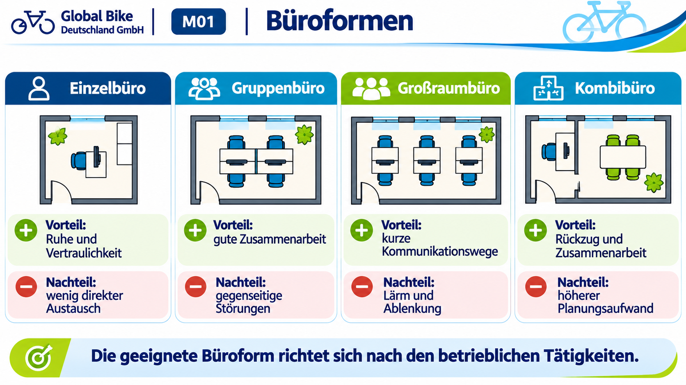

Basiswissen
Einzelbüro · Gruppenbüro · Großraumbüro · Kombibüro
Büroformen beschreiben die räumliche Organisation der Arbeit. Im Einzelbüro arbeitet eine Person, im Gruppenbüro ein kleines Team. Ein Großraumbüro vereint viele Arbeitsplätze; ein Kombibüro verbindet kleine Arbeitsräume mit gemeinsamen Flächen. Entscheidend ist, ob eine Tätigkeit Ruhe, Vertraulichkeit oder häufige Abstimmung verlangt.

![Telefonate im Vertrieb stören bei Global Bike die Rechnungsprüfung. Einzelbüro. Ein Arbeitsplatz im eigenen Raum. Gut für vertrauliche Gespräche und Aufgaben, die viel Ruhe brauchen. Gruppenbüro. Ein kleines Team teilt einen Raum. Absprachen gehen schnell, Gespräche können aber ablenken. Großraumbüro. Viele Arbeitsplätze liegen in einer offenen Fläche. Die Nutzung braucht Regeln und guten Schallschutz. Kombibüro. Kleine Arbeitsräume und gemeinsame Flächen. Ruhe und Austausch bekommen jeweils ihren Platz. Ein Nebenraum kann zum Telefonieren dienen. So gewinnt die Rechnungsprüfung Ruhe, ohne dass das Team umziehen muss.](Grafiken/Erklaerbilder/LS_6_9_M01_Bueroformen_und_Arbeitsaufgaben.png)
Optionales Vertiefungswissen
Bei Global Bike können vertrauliche Personalgespräche einen geschlossenen Raum erfordern. Für gemeinsame Vertriebsabsprachen sind kurze Wege hilfreich. Ein Kombibüro kann beide Bedürfnisse verbinden, benötigt aber passende Räume und eine durchdachte Nutzung. Keine Büroform ist grundsätzlich die beste.


![Emma Fuchs und Jan Richter prüfen Arbeitsplätze und Laufwege. Kabel im Laufweg. Kabel fest und außerhalb des Laufwegs verlegen. So sinkt die Stolpergefahr. Kartons am Notausgang. Kartons entfernen. Ausgang und Fluchtweg freihalten. Viele Ausdrucke. Nur bei Bedarf drucken, wenn geeignet doppelseitig. Licht und Geräte laufen weiter. Licht bei Bedarf nutzen. Geräte nach Feierabend nach den betrieblichen Vorgaben ausschalten. Eine passende Maßnahme setzt an der Ursache an. Sie lässt sich danach auf ihre Wirkung prüfen.](Grafiken/Erklaerbilder/LS_6_9_M03_M04_Buero_sicher_und_nachhaltig.png)